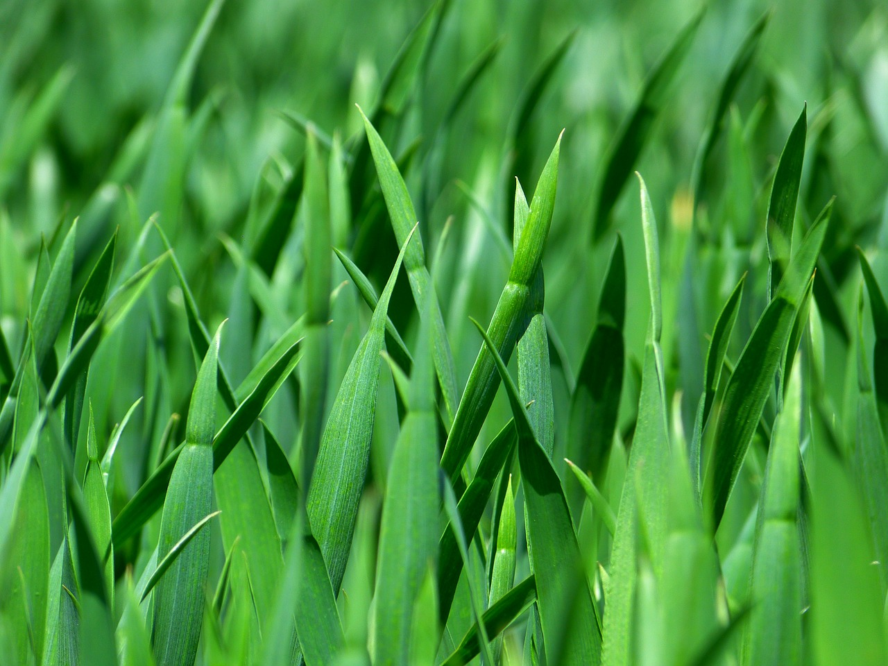
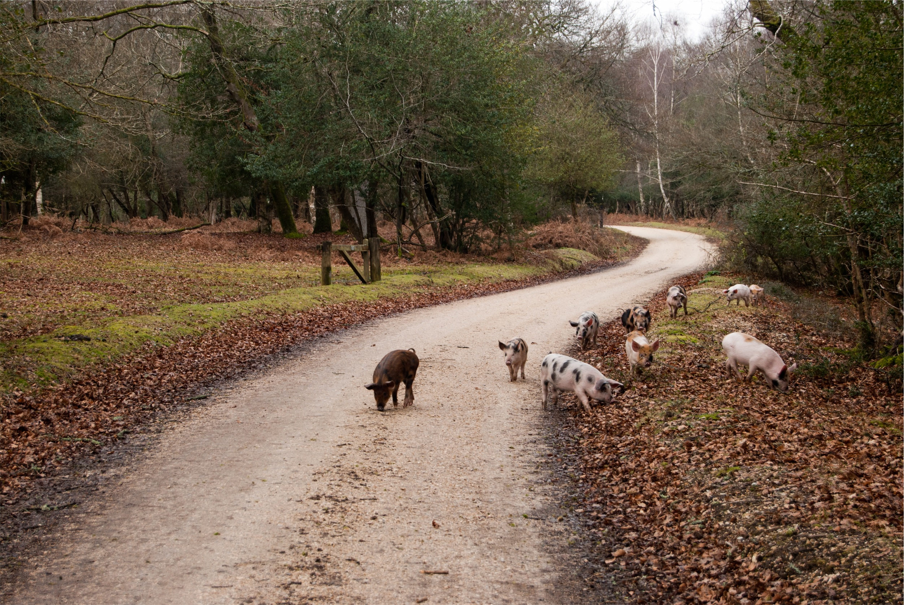
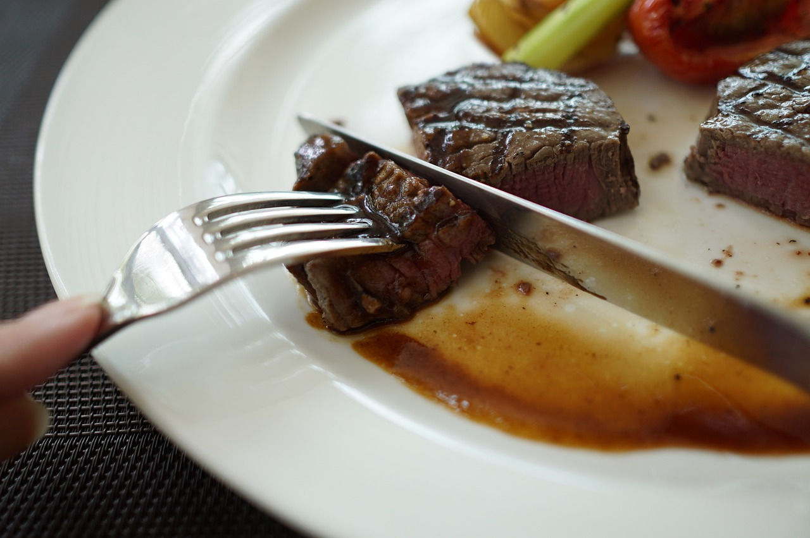
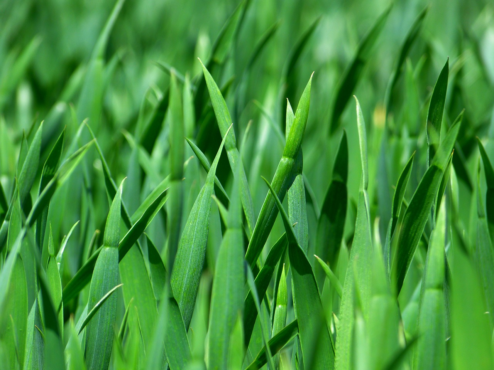
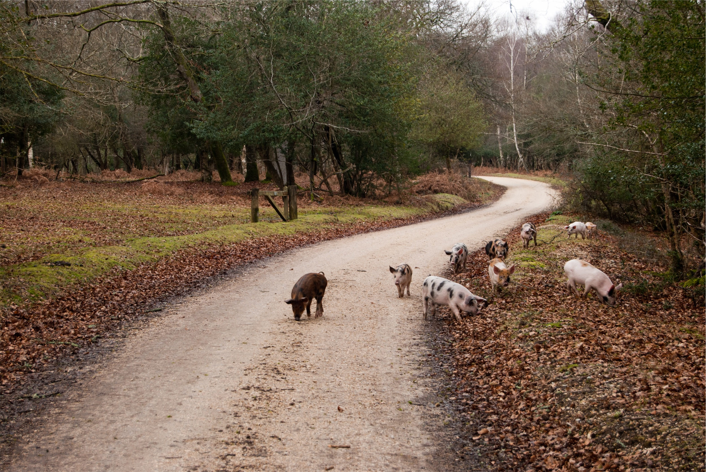
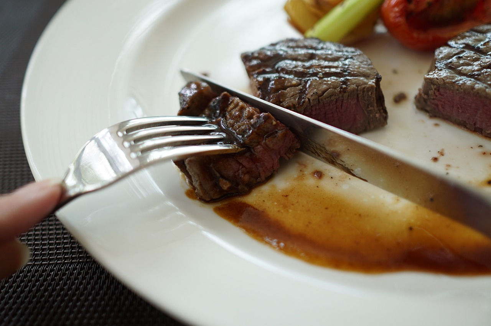

Our meat is raised locally.We will offer only premium products from local farmers who have raised their animals on either a primarily grass-based diet or in an organic manner as well as other dairy products and locally-grown vegetables.
Our animals are treated humanely. These animals live natural stress-free lives, never treated with antibiotics, hormones, or fed animal-by-products and therefore produce healthy, great-tasting meat, milk and eggs. Their diets are GMO-free, and the grasses are never sprayed with pesticides. Our pastured beef is abundantly marbled ensuring a tender texture and a deep, rich flavor. By working in partnership with local farmers we guarantee our rigorous standards are always carefully maintained.
Our meat offers health benefits.Pastured meat is; lower in total fat with more “good” fats and fewer “bad” fat, higher in beta-carotene, higher in vitamin E (alpha-tocopherol), in the B-vitamins thiamin and riboflavin, also higher in the minerals calcium, magnesium and potassium, higher in total omega-3s, has a healthier ratio of omega-6 to omega-3 fatty acids (1.65 vs. 4.84), higher in CLA (cis-9 trans-11), a potential cancer fighter, higher in vaccenic acid (which can be transformed into CLA), and lower in the saturated fats linked with heart disease, free of hormones, antibiotics or other drugs.
Our business is good for the environment.Our commitment supports local farmers and minimizes environmental impact. Industrial farming requires transportation, processing, packaging and fossil fuel usage that puts tremendous stress on the environment. For example, between production and transportation, growing 10% more produce for local consumption in Iowa would result in an annual savings ranging from 280,000 to 346,000 gallons of fuel, and an annual reduction in CO2 emissions ranging from 6.7 to 7.9 million pounds.
Our product is affordable.In general, pastured meats cost 15% more than factory farm meats available at a supermarket chain store but it’s worth it. Here’s why: Additional land is required to cultivate grass-fed beef. The quality and maintenance of that land has to be very high. Grass-fed cattle require an average of 7 months more in order to grow large enough to go to market while grain-fed cattle fatten up quickly. More staff is required to give cattle the optimal care, provide a low stress environment and excellent nutrition throughout their life. Our butchering process uses dry aging techniques to improve flavor which also takes time. Economics favor a large corporate farm over an individual grass-based farm but your health is worth the small increase in price.
Important Consideration Grass- Fed vs. Grain-Fed-
* Nutrients in Grass Fed= Lower in overall and saturated fats, higher in omega-3, up to 4 times as much Vitamin E, higher in CLA- a nutrient associated with lowering cancer risk Provides 15% to 50% of the omega-3 that grass-fed provides
*Nutrients in Grain-Fed=Greater risk of E. Coli and mad cow disease
*Calories Grass Fed=Up to 100 calories less than grain fed
Grain Fed=Fattier, more calories
*Lifestyle Grass Fed=Free roaming, live outside, grazing on grass or hay
Grain Fed=Fattened with grain which is hard to digest, treated with hormones, antibiotics and
additives to speed their growth
*Taste Grass fed = leaner, more varied
Grain Fed=Tough, bland


 




